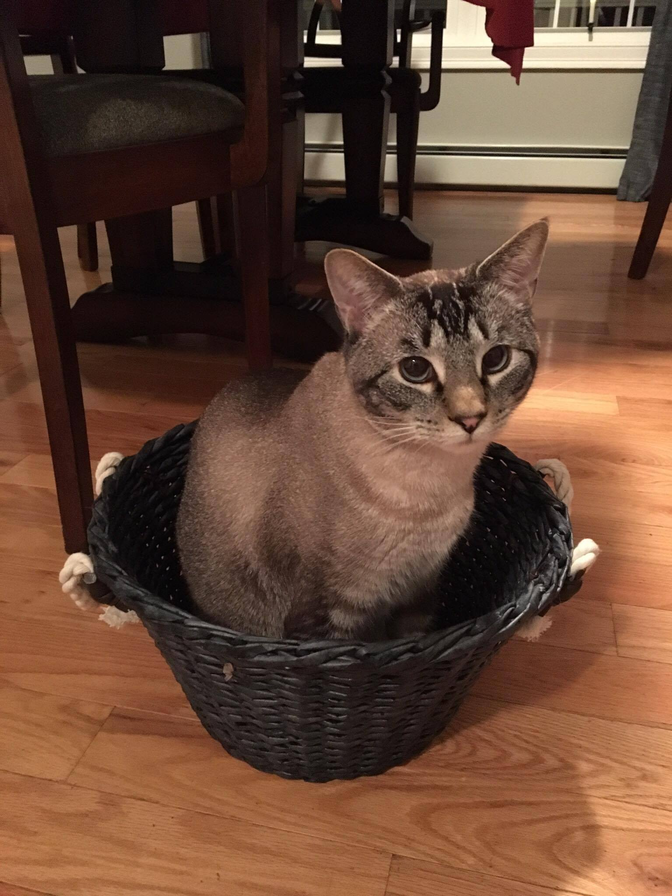

If I fits I sits is a term my household has developed throughout the three years we have had Sophie. The reason being that if there is any new object brought into the house she must identify that object by either sitting on it or in it. Some of the things she has managed to squeeze herself into are actually really funny...
This photo was taken this past easter. After waking up and having a yummy easter breakfast my mom had brought down this basket that sophie had never seen. Because she is so curious she had to figure out what this new thing was, so she proceeded to sit in it and try to eat some of the little fake grass.
This is actually Sophie's brother Lynx. He is my cousin's cat that we got around the same time. Clearly he knows this concept as well.